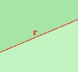
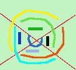
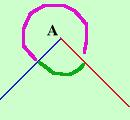

|
 Considero una retta r su un piano: il piano viene diviso in due parti che chiamero' semipiani di origine la retta r Per ogni cosa nuova che trovo devo prima di tutto controllare la congruenza: posso aggiungere ai postulati che tutti i semipiani sono tra loro congruenti  Considero due rette sul piano: ottengo troppe cose: ad ogni colore corrisponde una figura e ne ho segnate solo alcune allora considero due semirette aventi la stessa origine: ottengo che il piano viene diviso in due parti che chiamero' angoli  : per darne la definizione basta dire come l'ho trovato: Definizione: L'angolo e' una delle due parti in cui il piano viene suddiviso da due semirette aventi la stessa origine
Inoltre il concetto di angolo ci porta ad un nuovo concetto: la convessita'  Per indicare un angolo scriveremo tre lettere: la prima posta
su un lato, la seconda nel vertice dell'angolo e la terza sull'altro lato mettendo il simbolo di angolo sopra la lettera al centro e preferibilmente cercheremo di seguire un verso antiorario nella lettura delle lettere
Per indicare un angolo scriveremo tre lettere: la prima posta
su un lato, la seconda nel vertice dell'angolo e la terza sull'altro lato mettendo il simbolo di angolo sopra la lettera al centro e preferibilmente cercheremo di seguire un verso antiorario nella lettura delle lettere |

|

|

|

|